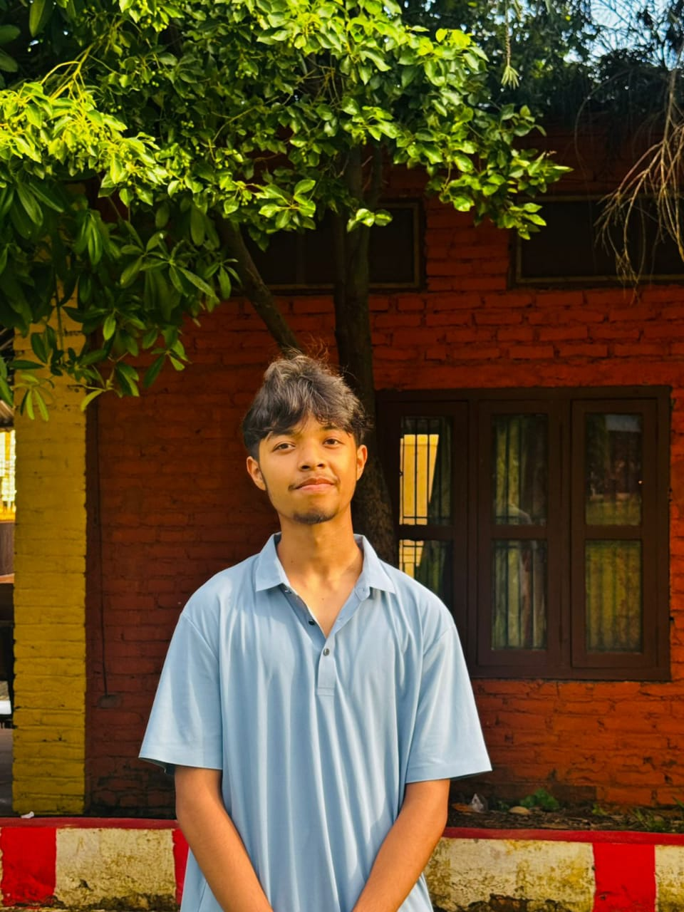

SubarnaKandel
Leading communities with purpose, building the future in code.
A young leader, entrepreneur, and technology enthusiast from Nepal, serving Interact District 3292 and building Zentobyte.

About me
I'm Subarna Kandel, a student leader and aspiring tech founder from Nepal.
My journey started in service. I joined the Interact Club of Gorkha, where I served as Secretary, and learned how much a team can achieve when it organizes well and shows up for its community.
Today I serve as Zonal Interact Representative for Zone 5, while working toward a second path: building technology. I'm planning Zentobyte, a company for software, websites, and coding education, and I contribute to digital and promotional work at Lumbini Smart School.
I'm most interested where leadership and technology meet: events that run smoothly, tools that help people, and skills that are shared rather than kept.
Leadership
- Zonal Interact Representative, Zone 5: Rotary Year 2026/27, Interact District 3292.
- Organizer, Zone 5 Zonal Sports Meet.
- Former Secretary, Interact Club of Gorkha.
Projects
Zone 5 Zonal Sports Meet
An inter-club sports event for Interactors in Zone 5, organized by me.
Zentobyte
A planned technology company for software, websites and coding education. I am the founder and CEO.
Lumbini Smart School
Digital and promotional projects for the school.
Skills and interests
- Technology: programming, web development, cybersecurity, coding education
- Management: event management, team coordination, planning, entrepreneurship
- Design: graphic design, promotional content
- Leadership: Rotary and Interact, communication, community service
Contact
Add your email and social links here.
- Email: subarnakandel21@gmail.com
- Facebook: Subarna kdl
- Instagram: Subarna.kdl